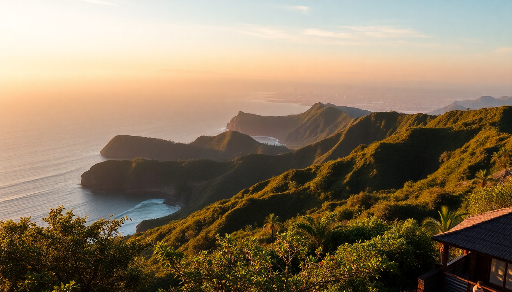

Best Day Trips from Bali: Ubud, Tanah Lot, Uluwatu & Nusa Penida

I spent two weeks based in Seminyak, and every morning I’d ask myself the same question: where do I actually want to go today that won’t eat half the day in traffic? Bali’s famous sights are spread out, and the roads are slow. So I picked four day trips that felt doable in a single day without rushing. Here’s what worked, what didn’t, and where I’d send a friend.
Is Ubud worth a full day trip from the coast?
Yes, but only if you leave before 7 AM. I made the mistake of leaving at 9 and spent an extra hour crawling through the outskirts of Denpasar. Ubud is about 90 minutes from Seminyak or Canggu when traffic is light, but it can stretch to two-plus hours.
Once you’re there, the town itself is crowded. The real value is just outside. I spent the morning at the Tegalalang Rice Terraces — walk down into the paddies, not just the photo spot at the top. The farmers there let you wander for a small donation. After that, I had lunch at Melting Wok Warung, a tiny family-run place on Jalan Goutama that does a mean nasi campur with crispy duck. Book ahead; they only have six tables.
- Tegalalang Rice Terraces — arrive by 8 AM to beat the tour buses
- Ubud Monkey Forest — fun for 30 minutes, but keep your sunglasses and phone zipped
- Ubud Art Market — mostly knockoffs; skip unless you enjoy haggling
- Campuhan Ridge Walk — a free, easy 2 km walk with open views, best at sunrise
I skipped the Tirta Empul water temple because the crowds made it feel like a theme park queue. If you want a temple with fewer people, try Gunung Kawi instead — it’s older, quieter, and has the same dramatic rock-cut shrines.
How do I see Tanah Lot without the tourist crush?
Tanah Lot is the most photographed temple in Bali, and it shows. The parking lot is chaos, and the souvenir stalls line the entire path to the shore. But the temple itself, perched on a rock outcrop in the Indian Ocean, is genuinely impressive — especially at sunset.
I went on a weekday in late afternoon, around 4 PM. The key is to walk left along the beach past the main viewing platform. There’s a quieter stretch of black sand where you can sit and watch the waves crash around the base. The temple is closed to visitors during high tide, but you don’t need to go inside to appreciate it.
- Main temple platform — arrive by 4:30 PM for sunset; leave by 6 to avoid the exit traffic jam
- Beach path to the left — fewer people, better angle for photos
- Nearby cafes — Sari Restaurant has cold Bintang and a decent view without the surcharge
I wouldn’t make a whole day out of Tanah Lot. Pair it with a morning at Taman Ayun Temple in Mengwi (20 minutes east) — it’s a Unesco site with moated courtyards and way fewer selfie sticks.
What’s the best way to do Uluwatu in a day?
Uluwatu sits on the southwestern tip of the Bukit Peninsula, about an hour from Seminyak depending on traffic. The main draw is Uluwatu Temple, which clings to a cliff 70 meters above the surf. The kecak fire dance at sunset is the big ticket here — starts around 6 PM, lasts an hour, and involves a chorus of chanting men and a dramatic fire finale. Book tickets online through the temple’s official site to skip the box office line.
I got there at 3 PM, walked the cliffside path (watch for aggressive monkeys — they will snatch your sunglasses), then grabbed a seat for the show. The view from the amphitheater faces the setting sun, so the whole performance is backlit in orange.
- Uluwatu Temple — entrance fee is 50,000 IDR (about $3); sarongs provided at the gate
- Kecak dance — tickets around 100,000 IDR; show starts at sunset
- Single Fin — a cliffside bar 5 minutes south, good for post-show drinks but packed by 8 PM
- Padang Padang Beach — small cove 10 minutes north; arrive early to claim a towel spot
If you surf, Uluwatu Beach (the one at the bottom of the cliff) has consistent left-hand breaks. I don’t surf, so I watched from the warung above and ate mie goreng while the sun dipped. That felt like enough.
Is Nusa Penida doable as a day trip from Bali?
Barely, but yes — if you’re okay with a long day and bumpy roads. The fast boat from Sanur Harbour to Nusa Penida takes 30–45 minutes. I booked a 7 AM departure with Maruti Express and was on the island by 7:45. The return boat leaves around 4 PM, so you have roughly eight hours.
The problem is the island’s infrastructure. The main road from the harbour to Kelingking Beach (the T-Rex-shaped cliff) is potholed dirt. A scooter is the fastest way, but I saw two tourists wipe out on loose gravel. I hired a driver for the day (around 500,000 IDR) and it was worth every rupiah.
- Kelingking Beach — the viewpoint is 10 minutes from parking; climbing down to the beach takes 45 minutes and is steep — skip if you have bad knees
- Angel’s Billabong — a natural infinity pool, but check tide charts; at high tide it’s just a wet rock
- Broken Beach — a collapsed cave arch, five minutes from Angel’s Billabong
- Diamond Beach — accessed via a new staircase; the water is stunningly turquoise
I couldn’t fit Crystal Bay (snorkelling with manta rays) into the same day. If you want that, stay overnight on the island. Penida Bambu Green has basic bungalows for $40 a night. Otherwise, you’ll rush through the east coast and miss the west.
FAQ
How much time should I spend at each destination? Ubud needs a full day if you want to see rice terraces and a temple. Tanah Lot works as a 2-hour sunset stop. Uluwatu takes half a day (temple, cliffs, and the dance). Nusa Penida needs a full day minimum, ideally two if you want to snorkel.
What’s the best way to get around for these trips? I rented a scooter for Ubud and Tanah Lot — traffic is manageable outside the main towns. For Uluwatu and Nusa Penida, I hired a private driver. Roads on the Bukit Peninsula and Nusa Penida are rough, and the driving style is chaotic. A driver costs about 400,000–600,000 IDR per day ($25–$40) and saves you the headache.
Which trip should I skip if I’m short on time? Skip Nusa Penida if you only have one day in Bali. The logistics (ferry, driver, rough roads) eat too much time for what you get. Do Uluwatu instead — it’s easier to reach, has better infrastructure, and the sunset at the temple is just as dramatic.
Conclusion
- Ubud is best for culture and rice terraces; go early and skip the market.
- Tanah Lot is a sunset-only stop; pair it with Taman Ayun Temple.
- Uluwatu delivers on cliffs and the kecak dance; watch your belongings around the monkeys.
- Nusa Penida is worth the effort only if you have two days; one day feels rushed and bumpy.
- Private drivers are worth the cost for Uluwatu and Nusa Penida; scooters work fine for Ubud and Tanah Lot.